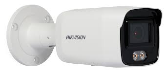
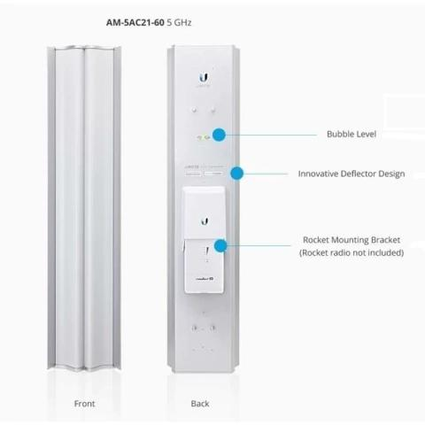
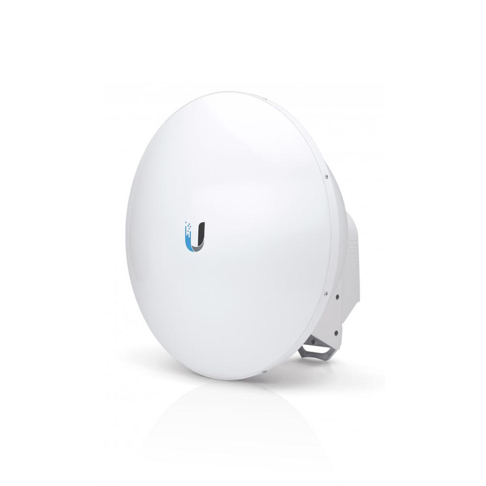
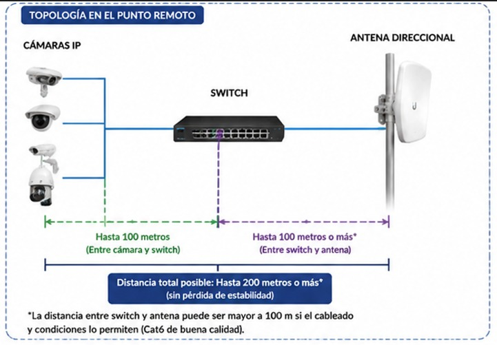
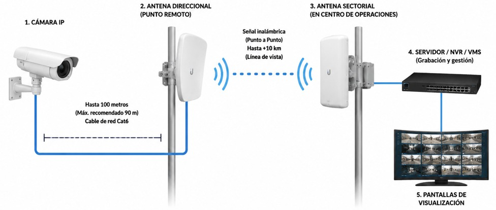
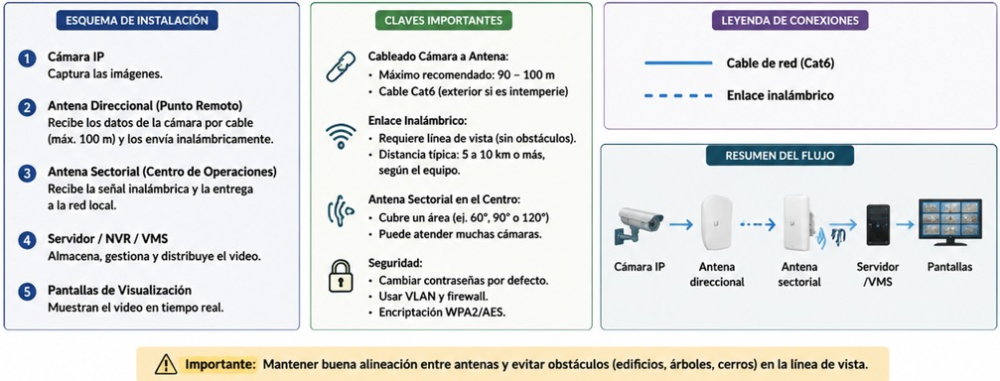

Proyecto de Implementación de Cámaras Inteligentes con Reconocimiento Facial
El proyecto contempla la implementación de 1.535 cámaras inteligentes distribuidas estratégicamente en 22 zonas priorizadas del municipio de El Alto. Las zonas fueron clasificadas según nivel de riesgo, flujo peatonal, actividad comercial y densidad poblacional.
| Zona | Nivel | Cámaras |
|---|---|---|
| La Ceja | Crítico | 180 |
| Pasarela del Arquitecto | Crítico | 60 |
| Feria 16 de Julio | Crítico | 170 |
| Villa Dolores / 12 de Octubre | Crítico | 140 |
| Río Seco (Ex Tranca) | Crítico | 120 |
| San Roque (Núcleo Central) | Crítico | 110 |
| Plaza Ballivián | Crítico | 80 |
| Cosmos 79 | Crítico | 95 |
| Alto Lima | Crítico | 95 |
| Ciudad Satélite | Crítico | 85 |
| San Roque Ex Tranca | Crítico | 90 |
| Senkata | Alto | 110 |
| Ventilla | Alto | 100 |
| 16 de Julio Urbana | Alto | 90 |
| Luis Espinal / Huayna Potosí | Alto | 80 |
| Mercurio | Alto | 75 |
| Villa Adela | Alto | 75 |
| Villa Ballivián | Alto | 65 |
| Río Seco Terminal | Alto | 80 |
| Santiago II | Alto | 70 |
| San Roque / Chijini Alto | Alto | 70 |
| Ballivián Norte | Alto | 60 |
| Cruce Villa Adela | Alto | 75 |
| San Lorenzo / Sanzana | Alto | 70 |
| Villa Bolívar A y D | Medio | 60 |
| Río Seco Extensión (Yunguyo) | Medio | 55 |
| Villa Esperanza (UPEA) | Medio | 50 |
| Villa Tunari | Medio | 45 |
| Bajo San José / Tejada Recta | Medio | 45 |
| Santa Rosa | Medio | 40 |
| Nuevos Horizontes | Medio | 40 |
| Plaza del Minero | Medio | 40 |
| Río Seco Ex Parada | Medio | 45 |
| SUBTOTAL CRÍTICO | 850 | |
| SUBTOTAL ALTO | 450 | |
| SUBTOTAL MEDIO | 235 | |
| TOTAL GENERAL | 1535 |

Características:
• Resolución 4K Ultra HD (8 MP)
• Tecnología ColorVu para imagen a color 24/7
• WDR 130 dB para contraluz extrema
• Compresión H.265+ para optimización de ancho de banda y almacenamiento
• Protección IP67 contra agua y polvo
• Visión nocturna a color de alta calidad
• Compatible con ONVIF, RTSP y VMS empresariales
• Ideal para analítica avanzada mediante IA en servidores externos
Precio Unitario: 400 Bs
1535 Cámaras: 614.000 Bs

Características:
• Cobertura sectorial de 60°
• Recepción simultánea de múltiples nodos inalámbricos
• Optimizada para redes de videovigilancia urbana
• Alta capacidad para tráfico de video IP
• Integración con radios base empresariales
• Diseñada para operación continua 24/7
• Instalación en torre principal del Centro de Operaciones
Cantidad Requerida: 6 Antenas
Función: Recibir y concentrar el tráfico proveniente de los nodos distribuidos en toda la ciudad para su procesamiento en el Centro de Operaciones y Monitoreo.

Características:
• Enlace inalámbrico punto a punto
• Capacidad de transmisión Gigabit
• Baja latencia para video en tiempo real
• Optimizada para videovigilancia urbana
• Alcance de varios kilómetros con línea de vista
• Resistente a condiciones climáticas extremas
• Operación continua 24/7
Cantidad Requerida: 39 Antenas
Función: Concentrar el tráfico de aproximadamente 40 cámaras IP por nodo y transmitirlo de forma segura hacia las antenas sectoriales ubicadas en el Centro de Operaciones y Monitoreo.
| Módulo IA | Tecnología | Librerías / Frameworks | Función |
|---|---|---|---|
| Procesamiento Principal | Python | Python 3.13 | Lenguaje principal para el desarrollo de la plataforma de Inteligencia Artificial. |
| Visión Computacional | Computer Vision | OpenCV | Procesamiento de imágenes y video en tiempo real. |
| Detección de Personas | Deep Learning | YOLOv11 | Detección de personas dentro de cada cámara. |
| Reconocimiento Facial | Face Recognition | InsightFace | Identificación y comparación de rostros. |
| Reidentificación de Personas | Person Re-ID | FastReID | Seguimiento de una persona entre múltiples cámaras. |
| Seguimiento de Objetivos | Tracking | ByteTrack | Mantener la identidad de una persona mientras se desplaza. |
| Análisis Corporal | Pose Estimation | MediaPipe | Detección de postura corporal y movimientos. |
| Análisis de Vestimenta | Clasificación Visual | YOLO + OpenCV | Identificación de color y tipo de ropa. |
| Análisis de Cabello | Deep Learning | PyTorch | Detección de color y características del cabello. |
| Reconocimiento de Matrículas | OCR | PaddleOCR | Lectura automática de placas vehiculares. |
| Análisis de Comportamiento | Machine Learning | PyTorch | Detección de peleas, caídas, aglomeraciones y eventos sospechosos. |
| Base de Datos IA | Almacenamiento | PostgreSQL | Almacenamiento de eventos, rostros y registros de búsqueda. |
| Servidor IA | GPU Computing | CUDA + NVIDIA | Aceleración del procesamiento mediante GPU. |
| Orden | Equipo | Configuración Principal | Función |
|---|---|---|---|
| 1 | Switch PoE Industrial | IP de gestión, VLAN de cámaras, QoS Video, PoE habilitado | Recibe aproximadamente 40 cámaras IP y concentra el tráfico. |
| 2 | Antena Direccional | Modo Station/Cliente, IP de gestión, enlace al sectorial | Transporta el tráfico del nodo hacia el Centro Operativo. |
| 3 | Antena Sectorial | Modo Access Point, frecuencia asignada, recepción de múltiples nodos | Recibe simultáneamente los enlaces provenientes de las antenas direccionales. |
| 4 | Switch Core Capa 3 | VLAN principal, routing interno, enlace 10 Gbps | Recibe y distribuye todo el tráfico proveniente de las antenas sectoriales. |
| 5 | Servidor VMS / IA | Dirección IP fija, recepción de streams RTSP | Procesa, almacena y analiza el video recibido para monitoreo e inteligencia artificial. |

Grupo de aproximadamente 40 cámaras IP conectadas a un Switch PoE Industrial.

Antenas direccionales de alta capacidad envían la información hacia el Centro de Operaciones.

Diagrama de la infraestructura de videovigilancia que ilustra el recorrido de la información desde las cámaras IP instaladas en campo hasta el Centro de Operaciones y Monitoreo, incluyendo enlaces inalámbricos, servidores y sistemas de visualización.
Infraestructura para 1.535 Cámaras IP con Analítica Avanzada e Inteligencia Artificial
| Orden | Componente | Modelo Propuesto | Cantidad | Función |
|---|---|---|---|---|
| 1 | Cámara IP Inteligente 4K IA | Hikvision DS-2CD7086G0-AP | 1535 | Captura video 4K de alta definición para reconocimiento facial, seguimiento de personas, análisis de vestimenta, silueta, trayectorias y comportamiento mediante IA. |
| 2 | Soporte y Brazo de Montaje | Industrial Galvanizado | 1535 | Instalación segura de las cámaras en postes y estructuras urbanas. |
| 3 | Caja de Protección Exterior | NEMA 4X Industrial | 1535 | Protección de conexiones eléctricas y de red contra lluvia, polvo y vandalismo. |
| 4 | Switch PoE Industrial | Cisco Catalyst IE3300 | 39 | Alimenta las cámaras IP y concentra aproximadamente 40 cámaras por nodo. |
| 5 | Gabinete Exterior Inteligente | Industrial IP66 | 39 | Aloja equipos de comunicaciones y protección eléctrica del nodo. |
| 6 | UPS Industrial | APC Industrial | 39 | Mantiene la operación ante interrupciones eléctricas locales. |
| 7 | Antena Direccional | airFiber 5XHD | 39 | Transporta el tráfico de cada nodo hacia el Centro de Operaciones. |
| 8 | Radio para Enlace Direccional | airFiber 5XHD | 39 | Gestiona enlaces inalámbricos de alta capacidad y baja latencia. |
| 9 | Torre de Telecomunicaciones | Autosoportada | Según diseño | Permite mantener línea de vista entre nodos y centro operativo. |
| 10 | Antena Sectorial 60° | airFiber X Sector | 6 | Recibe simultáneamente el tráfico proveniente de los nodos distribuidos. |
| 11 | Radio Base Empresarial | Rocket Prism 5AC Gen2 | 12 | Procesa las comunicaciones inalámbricas recibidas por las sectoriales. |
| 12 | Fibra Óptica Interna | 10/25 Gbps | 1 | Transporta datos desde los radios base hasta el núcleo de la red. |
| Orden | Componente | Cantidad | Función Específica |
|---|---|---|---|
| 1 | Switch Core Capa 3 Principal | 1 | Recibe y distribuye todo el tráfico de video del sistema. |
| 2 | Switch Core Capa 3 Respaldo | 1 | Garantiza continuidad operativa ante fallas del switch principal. |
| 3 | Firewall Empresarial Principal | 1 | Protección perimetral de toda la infraestructura. |
| 4 | Firewall Empresarial Respaldo | 1 | Redundancia de seguridad y alta disponibilidad. |
| 5 | Servidor VMS Principal | 1 | Administra cámaras, usuarios, eventos y grabaciones. |
| 6 | Servidor VMS Secundario | 1 | Respaldo operativo y balanceo de carga. |
| 7 | Servidor de Almacenamiento Principal | 1 | Almacenamiento centralizado de video. |
| 8 | Servidor de Almacenamiento Secundario | 1 | Replica y protege las grabaciones. |
| 9 | Servidor IA GPU | 2 | Reconocimiento facial, siluetas, postura, cabello, vestimenta y seguimiento inteligente. |
| 10 | Controlador Video Wall | 2 | Distribuye cámaras y mapas sobre el muro de visualización. |
| 11 | Video Wall Principal | 12 Pantallas 55" 4K | Monitoreo de incidentes críticos y visualización estratégica. |
| 12 | Video Wall Secundario | 6 Pantallas 55" 4K | Operaciones de contingencia y monitoreo especializado. |
| 13 | Estaciones de Operador | 12 | Puestos de trabajo para supervisión, búsqueda y análisis de eventos. |
| 14 | Monitores de Operador | 24 | Dos monitores por operador para trabajo simultáneo. |
| 15 | UPS Online | 2 | Respaldo energético de infraestructura crítica. |
| 16 | Generador Eléctrico | 1 | Mantiene el centro operativo funcionando durante cortes prolongados. |
| 17 | Racks de Comunicaciones | 4 | Organización física de equipos y cableado. |
| 18 | Aire Acondicionado de Precisión | 2 | Control térmico para servidores y equipos críticos. |
| Frecuencia | Actividades | Tiempo Estimado |
|---|---|---|
| Mensual |
• Revisión de cámaras IP. • Verificación de switches PoE y conectividad de red. • Revisión de antenas direccionales y sectoriales. • Supervisión de servidores y almacenamiento. • Verificación del funcionamiento de los módulos de IA. |
4 a 8 horas |
| Trimestral |
• Inspección de cableado estructurado y conectores. • Respaldo de configuraciones de red. • Optimización de bases de datos. • Ajuste y optimización de modelos de IA. • Verificación de UPS y sistemas de respaldo. |
1 día (8 horas) |
| Semestral |
• Actualización de firmware de switches y antenas. • Actualización de software y librerías de IA. • Revisión física de gabinetes y estructuras. • Limpieza preventiva de equipos críticos. |
1 a 2 días |
| Anual |
• Auditoría integral de la infraestructura tecnológica. • Reentrenamiento y mejora de modelos de IA. • Evaluación de capacidad y rendimiento del sistema. • Elaboración de informe técnico y plan de mejoras. |
2 a 5 días |
| Bajo Demanda |
• Atención de fallas. • Reposición de equipos. • Soporte técnico especializado. • Ajustes solicitados por la entidad operadora. |
Según la incidencia |